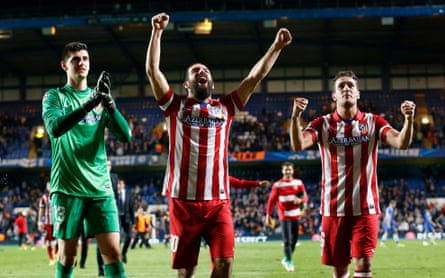
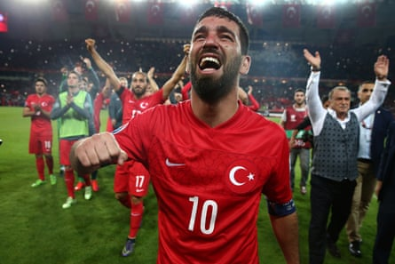
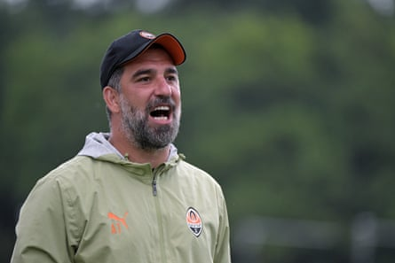

A rda Turan knows the question is coming. How has the firebrand who thrilled and exasperated during a successful, sometimes wildly controversial, playing career become a manager with the temperament to take on one of Europe’s most delicate jobs? It comes down to taking a breath. “When there is something going on, right now the first thing that comes into my mind is thinking rather than reacting,” he says with a grin.
There will be plenty to occupy that fizzing brain at Shakhtar Donetsk , where he was appointed head coach in May. His competitive debut comes on Thursday, against the Finnish side Ilves, but it is a Europa League first qualifying round tie and the Ukrainian giants are not used to that stage. This is only their second year since the turn of the century without any form of Champions League football and they have rolled the dice by asking one of Turkey’s greatest ever footballers to set them straight.
Across those playing days Turan won 13 trophies, including two league titles apiece in La Liga and his homeland, and is a rare example of a Turkish export who achieved staying power at Europe’s summit. In the first half of the 2010s there were few better, more varied attacking midfielders around. None of it came by chance and the aim now is to have a similar effect from the dugout.
“It’s a special opportunity for me,” he says. “Of course some things will take time. We need to regain the league title first and then we can think of getting Shakhtar to play games that have ‘final’ in their names, just like they did 16 years ago”.
He is talking about their now almost unthinkable Uefa Cup win in 2009 . Turan has not come in cold: the chance to think big was hard won after a two-year spell overseeing the rise of minnows Eyupspor, a little-known Istanbul club who he guided to a first top-flight promotion in 2023-24, narrowly failing to crown that with a European spot last season. It was impressive work by any measure of a first managerial role. “Improvised football” and “automatism” is how he terms the style behind their breakthrough, although in reality there is plenty more behind his methods.
Much of it owes to time spent under a string of garlanded managers at Atlético Madrid, Barcelona, his beloved Galatasaray and the Turkey national team. Among them were the contrasting styles of Diego Simeone and Luis Enrique, while he also points to the likes of Fatih Terim, Guus Hiddink and Frank Rijkaard. Turan was hot-headed but says he was always listening, too, and storing ideas for future adaptation. He captained Galatasaray aged 22. “Management was always somewhere in my mind,” he says. “I always observed the interaction between coaches and players: what the coach did and how the players were responding.
Arda Turan (middle) was part of the Atlético Madrid squad that won La Liga in 2014.Photograph: Tom Jenkins/The Guardian
“If you’ve ever worked with Simeone you’ll always have certain football ideas in your head. You’ll directly implement them because he was so impressive. Luis Enrique always had great face-to-face communication with players and incredible attacking solutions. I really believe they were very important.
“But it’s not copy and paste, I have my own football ideas too. With Simeone and Luis Enrique I had very valuable chats and discussions. They were excellent teachers but I also believe good students should improve on what they have been taught. I have a lot of positives in my pocket and now I’m trying to put them into practice on the pitch.”
He points to the blend of magic, tight-bound brotherhood and extraordinary physical prowess that saw off Real Madrid and Barcelona to earn Atlético that most scintillating of La Liga wins in 2013-14. Simeone’s team could play but, before everything, they were taught humility. “I always give this example: when Real and Barcelona were going to the US or the far east in pre-season with their sunglasses and everything, we were taken running in the mountains in Segovia,” Turan says.
Perhaps harnessing the steel of Simeone with the lyrical approach of Luis Enrique would reap dividends. In extensively outlining what separates the elite from everybody else, Turan repeatedly comes back to the topic of physicality as a platform for expression. He believes it helped Eyupspor face up to Turkey’s giants and wants it to shift the dial in Ukraine.
“In the big five leagues, 24 players out of 24 have the top physical quality,” he says. “In the other leagues only five or six players in each team have that quality and this creates the imbalance. Look at Nuno Mendes, the left-back at PSG: he loses many balls, but the point is that he reacts straight afterwards. Tactics and correct positioning are important but you can’t implement them without physicality.
“I was an offensive player, always wearing 10, and eventually didn’t like to run. But it’s the first step to achieving certain things. You can see how Ousmane Dembélé has been transformed, starting the high press. If we want to reach the highest level with Shakhtar we need to fight like this. If you are ready, you will feel you can compete with anyone.”
Turan: ‘I was an offensive player, always wearing 10, and eventually didn’t like to run.’Photograph: AFP/Getty Images
Turan’s aggressive edge has overspilled in ways that cannot be ignored. In September 2019 he was given a suspended jail sentence, which has now expired, after a brawl with the singer Berkay Sahin. It resulted in a broken nose for Sahin and culminated with Turan appearing at the hospital, firing a gun at the floor during the ensuing confusion. He later apologised. Turan is also alleged to have abused a journalist on Turkey’s team plane after a match against North Macedonia in 2017, briefly retiring from international football afterwards, and in 2018 received a 16-game ban for shoving an assistant referee while on loan at Istanbul Basaksehir.
At 38, and with managers’ behaviour far more closely policed, those old ways will not get you anywhere. “When I was a player, I was only responsible for myself,” he says. “I didn’t have two children. I was more aggressive. I had the right to be more aggressive, and more right to make mistakes. But when you are a manager, you have players to look after and should remain calm in your character.
“I can say I’m more professional now, but if there’s something unfair to me then I won’t give in and my players know it. Of course I have made mistakes in my past, but I believe some of them came from the right place and I don’t regret making them.”
He knows man management will be essential in the unique situation he has inherited at Shakhtar, who have flown the flag for Ukraine to enormous credit for more than a decade since Russia’s invasion forced them to leave Donetsk. Travel to play European games – whether away or at “home” grounds such as Stozice Stadium in Ljubljana, where they will face Ilves – eats up endless days on the road. Players and their close ones continue to feel the horrors being inflicted in their country. The task of returning Shakhtar to the top has dimensions far beyond football.
Turan was appointed head coach of Shakhtar Donetsk in May.Photograph: Courtesy of Shakhtar
“It’s really exciting that we have this opportunity to make so many people happy, to give some contentment when all these things are going on in their country,” he says. “We will have no excuses at all. The lives and families of my players are the most important thing to me and I’ve told them I will be supporting them fully in this area. My heart will always be with them. The sacrifices Ukrainian football has made are huge and if I can help Shakhtar be successful I’ll be the happiest person.”
Turan will work closely with the Shakhtar director of football, Darijo Srna, with whom he sparred on multiple occasions for fine Turkey and Croatian teams. It appears Srna has forgiven him for the dramatic fashion in which Turan’s side prevailed in the Euro 2008 quarter-finals, both players scoring in the shootout but Turkey pulling through after the teams had traded goals late in extra time.
“They really crushed us in the eight years after that,” he laughs. “It was an important game in our history. Maybe without that suffering, they couldn’t have bounced back and gone all the way to the World Cup final. I’m happy we shared these moments.”
Now they aim to feast in many more. Turan the head coach may be an unlikely figure to those with long memories, but has no qualms admitting that he wants to emulate those heights achieved on the pitch. “Of course I have this dream in my mind,” he says. “But I think Shakhtar have every means in place to realise my dreams.” Restoring their past glories would, by some distance, be his greatest feat yet.